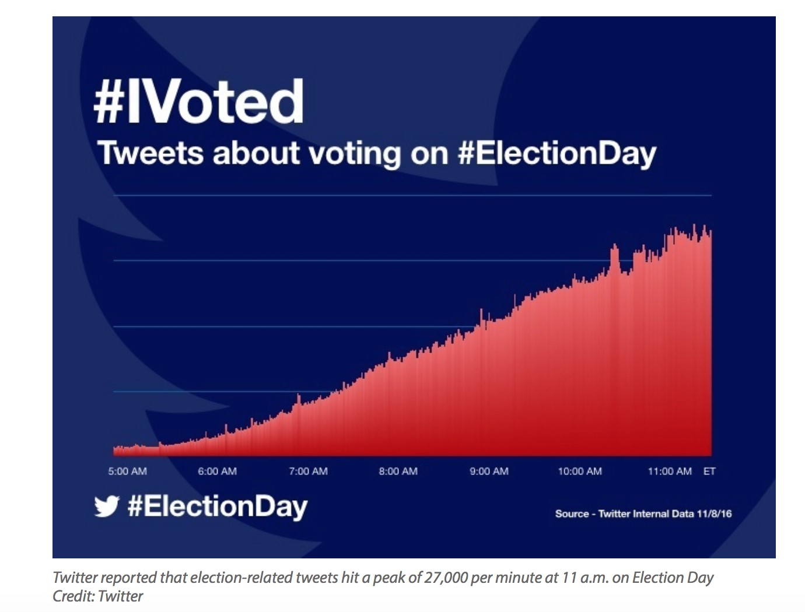

INTRODUCTION
In today’s society, “democracy” is a term known to most and a concept that is very familiar to the people of the United States. Over time, this idea of the government representing the people has become quite popular. But how has this idea spread throughout the rest of the globe? Is it as popular in other countries as it is in America? It is easy for Americans to want to share this type of government with other parts of the world, however it is easier said than done. The internet has allowed for the fast spread of ideas and communication amongst people from all over the world. Over time, democracy has been a hot topic as technology and social media have worked hand in hand to spread these ideas and particular stance to various regions; but has it been successful? This post will explore the concept of The Google Doctrine as coined by Evgeny Morozov, examples of how it has been shown in today’s society, and the issues that come with it.
WHAT IS THE GOOGLE DOCTRINE?
Technology and social media have rapidly become tools of communication for much of society over the past decade. It serves to quickly spread information, and allows for individuals to express their ideas and opinions on numerous topics. So how does this play into the idea of politics and democracy? It is quite easy for individuals to share a Facebook status or post a new tweet regarding various political issues. One could start a thread on Facebook on what they think of the last political debate or start a hashtag on twitter to discuss recent events in the Black Lives Matter movement. In The Net Delusion: The Dark Side of Internet Freedom, the Google Doctrine is described as, “...the enthusiastic belief in the liberating power of technology accompanied by the irresistible urge to enlist silicon valley start-us in the global fight for freedom” (Morzov, xiii). Essentially, the concept of the Google Doctrine sums up the perspective a lot of society has taken today in their use of the internet and networked politics. Social media has made it easy for individuals to use the sites or companies they are big fans of, as allies. In a way, they are teaming up with companies such as Facebook to express their opinions and spread their own personal ideas, in hopes that it will make a dent in this very large global society they are a part of.
EXAMPLES
How has this fantasized concept explained by Morozov been shown in the real world then? The idea of the Google Doctrine can shown up in numerous ways -- both subtle and direct. Often times large companies and their members, such as Facebook and Google, can be allies of democracy and society may not know it at all. With Facebook’s ever so complicated algorithms, it is easy for them to display certain types of news, and that includes ones that could favor on the side of democracy. In an article on the New York Times, Facebook’s capabilities are explained saying, “The question isn’t whether Facebook has outsize power to shape the world — of course it does, and of course you should worry about that power.” (Manjoo, "Facebook’s Bias Is Built-In, and Bears Watching."). With Twitter, simple hashtags are enough to spark discussions or even start large movements
Although not about a specific political party, the simple hashtag #ElectionDay was able to garner about 27,000 tweets per minute in simply six short hours on the day of the 2016 presidential election (Gaudin, “In Presidential Campaign, Twitter was Powerful Political Tool.”). It is quite easy to see how easily this concept of the Google Doctrine can play out in modern day society, as even the smallest actions from both users of social media sites and the ones who work behind the scenes for them are able to spark a large scale revolution.
ISSUES WITH THE GOOGLE DOCTRINE
Similar with the concept of Cyber-Utopianism, believers of Google Doctrine fails to see the downside of enlisting large companies in spreading their political ideas and Beliefs. The Google Doctrine pairs quite well with the idea of cyber-utopianism which Morozov in The Net Delusion: The Dark Side of Internet Freedom describes as, “...a naïve belief in the emancipatory nature of online communication that rests on a stubborn refusal to acknowledge its downside” (xiii). The two concepts are quite complementary to each other, and can often go hand in hand. The Google Doctrine can often make it appear that the use of technology in spreading democracy comes with a lot less consequences than it actually does.
The enlisting of Silicon Valley in spreading political justice can quickly get quite messy and blurry -- for both the social media users and the workers of these companies. It can be difficult for companies to take a strong political sense -- and show it -- without getting into controversy in the public eye. Recently, Facebook got thrown into hot water when it was questioned whether they were one of those Silicon Valley allies that Morozov describes and if they were biasing their news feed Algorithm. The power of Facebook and other members of Silicon Valley’s abilities are described as saying, “More than 1.04 billion people use Facebook. It’s where we get our news, share our political views, and interact with politicians. It’s also where those politicians are spending a greater share of their budgets.” (Nunez, "Facebook Employees Asked Mark Zuckerberg If They Should Try to Stop a Donald Trump Presidency."). It is quite clear to see how enlisting Silicon Valley can quickly lead to murky waters. The actions of these companies in trying to promote the more freedom baring side does not always lead to a great outcome; more often than not it leads to more relationships confusion. Not to mention it can quickly lead to the obvious destruction of relationships between companies and certain groups of People. After this initial controversy, Mark Zuckerberg and the rest of Facebook quickly went to amend their relationship with users of the opposing side (conservatives) in fear that this would be harmful to the company. The breakdown of the meeting between Zuckerberg and other executives was described as, “...the group saying they felt conservatives did not have a true voice in the generally liberal area of Silicon Valley. To reassure attendees that Facebook is open to all perspectives, the company walked them through a technical presentation on how it surfaces the most popular news stories on the site.” (Isaac and Corasaniti, “For Facebook and Conservatives, a Collegial Meeting in Silicon Valley.”). Although the relationship was amended, could it have been in genuine interest in repairing the relationship with conservatives, or was it in interest of the company’s name and brand? This topic tends to be another downside in the concept of the Google Doctrine; it is never quite clear what the intentions of companies are when enlisting the help of Silicon Valley. In many ways, the Google Doctrine is often, seen as beneficial on paper, but not necessarily in practice.
CONCLUSION
Democracy has been quite monumental in the history of America. Throughout time, the introduction of technology and the internet has allowed for advancements in American society in a number of ways. Individuals are now able to communicate with virtually anyone around the globe, ideas can easily be shared with a click of a button, and discussions can quickly be sparked with a simple tweet. It is quite obvious to see how these advancements in American society can play a role in the spread of democracy around the globe. For Americans, the idea of spreading this type of government that can appear so common to them, but not to other countries that have yet to experience it, is easy. This belief can be summed up by a term called the Google Doctrine as coined by Evgeny Morozov. This idealistic belief at first may seem like a fool proof plan, but comes with many more implications and fine details than it appears. In conclusion, when approaching the idea of spreading one’s belief in democracy online, it is easy to see how there may not be very many implications that come with it; however, it is important to be aware of the consequences that come with this belief, and how it can affect not only users of the internet and social media, but also the companies that may also be enlisted in this plan.
WORKS CITED
"Evgeny Morozov - On Silicon Valley Solutionism" YouTube. TheNextInstitute, 13 Jan. 2013. Web. 04 Dec. 2016.
Gaudin, Sharon. "In Presidential Campaign, Twitter Was a Powerful Political Tool." Computerworld. Computerworld, 08 Nov. 2016. Web. 04 Dec. 2016.
Isaac, Mike, and Nick Corasaniti. "For Facebook and Conservatives, a Collegial Meeting in Silicon Valley." The New York Times. The New York Times, 18 May 2016. Web. 04 Dec. 2016.
Manjoo, Farhad. "Facebook’s Bias Is Built-In, and Bears Watching." The New York Times. The New York Times, 11 May 2016. Web. 04 Dec. 2016.
Morozov, Evgeny. The Net Delusion: The Dark Side of Internet Freedom. New York: Public Affairs, 2011. Print.
Nunez, Michael. "Facebook Employees Asked Mark Zuckerberg If They Should Try to Stop a Donald Trump Presidency ." Gizmodo. N.p., 15 Apr. 2016. Web. 04 Dec. 2016.